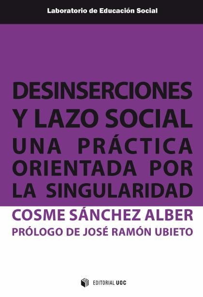
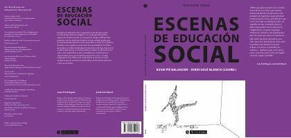
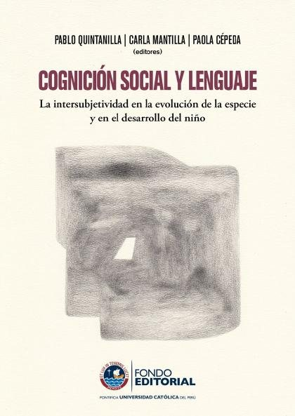
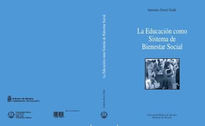
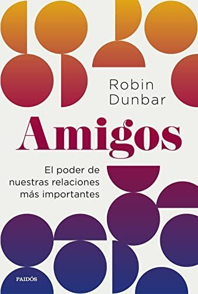
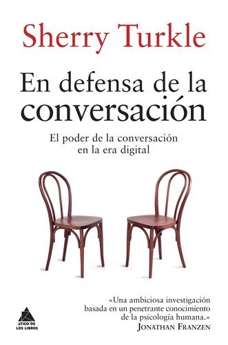
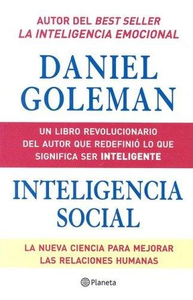
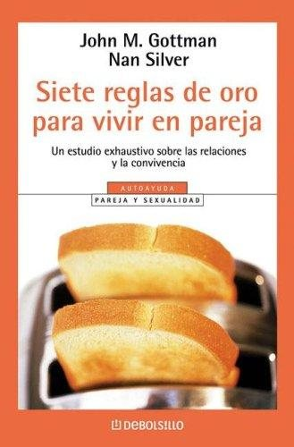
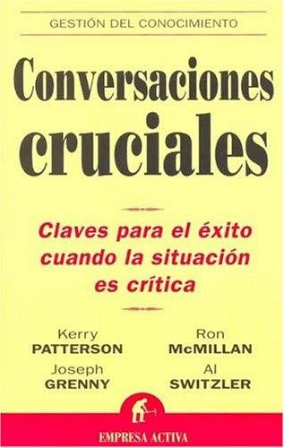

Libros de psicología social y relaciones humanas
Libros de psicología social y relaciones humanas en español: 106 libros completos para leer gratis aquí mismo y 40 fichas de títulos actuales.
Psicología socialComunicación no verbalEstereotiposDependencia emocionalPsicología interpersonalRelaciones familiaresComunicación asertivaEscucha activaApego en las relacionesRelaciones románticasAtracción interpersonalRupturas sentimentalesCelos en las relacionesPersuasiónInfluencia socialRechazo socialConducta prosocialLímites personalesResolución de conflictosConformidadDinámica de gruposIdentidad grupalAmistadObediencia
Currículo para el aprendizaje socioemocional (CASE)García Bacete, Francisco Juan; Marande Perrin, Ghislaine
Currículo para el aprendizaje socioemocional (CASE)García Bacete, Francisco Juan; Marande Perrin, GhislaineComunicación no verbalSoria-Oliver, María; García Sánchez, Rubén; López, Jorge S.; Martín López, María Jesús; Martínez, José Manuel; Ratón Berlanga, Marta
Comunicación no verbalSoria-Oliver, María; García Sánchez, Rubén; López, Jorge S.; Martín López, María Jesús; Martínez, José Manuel; Ratón Berlanga, MartaEstereotipos sobre el envejecimiento en una muestra universitaria de Ciencias de la SaludAlarcón Aguilar, Ana H.; Rojano-Hidalgo, Mario; Calero Galindo, Luis
Estereotipos sobre el envejecimiento en una muestra universitaria de Ciencias de la SaludAlarcón Aguilar, Ana H.; Rojano-Hidalgo, Mario; Calero Galindo, LuisPsicólogas pioneras. Historias de ciencia, feminismo y compromiso socialMonteagudo Soto, María José; García-Colmenares, Carmen
Psicólogas pioneras. Historias de ciencia, feminismo y compromiso socialMonteagudo Soto, María José; García-Colmenares, CarmenRelaciones sanas: Programa educativo para la prevención de la violencia en las relaciones de pareja jovenLara Vázquez, Laura
Relaciones sanas: Programa educativo para la prevención de la violencia en las relaciones de pareja jovenLara Vázquez, LauraAdolescentes y vínculo educativo: esculpir relaciones con lo socialSilva Balerio, Diego
Adolescentes y vínculo educativo: esculpir relaciones con lo socialSilva Balerio, DiegoAvanza joven: estudio, diagnóstico y propuesta de intervención socioeducativa en casos de violencia filioparental en Castilla y LeónCuéllar Cachazo, Paloma; Serrate González, Sara; Muñoz Rodríguez, José Manuel; Rojo Brezmes, José Andrés; Huete García, Agustín; Caballero Julia, Daniel
Avanza joven: estudio, diagnóstico y propuesta de intervención socioeducativa en casos de violencia filioparental en Castilla y LeónCuéllar Cachazo, Paloma; Serrate González, Sara; Muñoz Rodríguez, José Manuel; Rojo Brezmes, José Andrés; Huete García, Agustín; Caballero Julia, DanielEnvejecer con derechos: la participación social de los adultos mayoresBósquez Salas, Diana Vanessa
Envejecer con derechos: la participación social de los adultos mayoresBósquez Salas, Diana VanessaProgramas socioeducativos de prevención de conductas de riesgo y adicciones. Aproximación a los estándares de calidadIllanes Segura, Rocío; Helena Quintas
Programas socioeducativos de prevención de conductas de riesgo y adicciones. Aproximación a los estándares de calidadIllanes Segura, Rocío; Helena QuintasTerapia de pareja: principios básicos e intervenciónMartín Herrero, José Antonio
Terapia de pareja: principios básicos e intervenciónMartín Herrero, José Antonio¿A dónde voy? El sistema de servicios sociales dirigido a personas con adicciones [Recurso Educativo]Picado Valverde, Eva María
¿A dónde voy? El sistema de servicios sociales dirigido a personas con adicciones [Recurso Educativo]Picado Valverde, Eva María¿Cuándo es necesario ayudar a los niños a socializar?
¿Cuándo es necesario ayudar a los niños a socializar?¿Vivimos en una sociedad que promueve las enfermedades mentales o es que somos más conscientes de ellas?
¿Vivimos en una sociedad que promueve las enfermedades mentales o es que somos más conscientes de ellas?Ciberviolencia en las redes sociales: Experiencia y prácticas en la población juvenilLeón Mejía, Ana Cristina; Guzmán Ordaz, Raquel; Yurrebaso Macho, Amaia; García Valverde, Esther; Seixas Vicente, Isabel; García Alonso, Elena María; Picado Valverde, Eva María
Ciberviolencia en las redes sociales: Experiencia y prácticas en la población juvenilLeón Mejía, Ana Cristina; Guzmán Ordaz, Raquel; Yurrebaso Macho, Amaia; García Valverde, Esther; Seixas Vicente, Isabel; García Alonso, Elena María; Picado Valverde, Eva MaríaInfancia, control social y derechos humanosViñas, Silvia Perla
Infancia, control social y derechos humanosViñas, Silvia PerlaTeoría socio-histórica, aprendizaje y educaciónDubrovsky, Silvia
Teoría socio-histórica, aprendizaje y educaciónDubrovsky, SilviaTerapia interpersonal grupal para la depresión
Terapia interpersonal grupal para la depresiónComunicación asistencial para médicos. II parte: la comunicación asistencial como proceso social interactivoGarcía Arroyo, José Manuel
Comunicación asistencial para médicos. II parte: la comunicación asistencial como proceso social interactivoGarcía Arroyo, José ManuelDesinserciones y lazo social: una práctica orientada por la singularidadSánchez Alber, Cosme
Desinserciones y lazo social: una práctica orientada por la singularidadSánchez Alber, Cosme
Intervención bio-psico-social en adiccionesMartín Herrero, José Antonio
Intervención bio-psico-social en adiccionesMartín Herrero, José AntonioSer adolescente. ¿Transición o destino?Fandiño, Ricardo; Rodriguez-Pousada, Vanessa
Ser adolescente. ¿Transición o destino?Fandiño, Ricardo; Rodriguez-Pousada, Vanessa¿Qué quiere un adolescente? Estudio sobre sujetos con problemáticas socialesPereira, Marcelo Ricardo
¿Qué quiere un adolescente? Estudio sobre sujetos con problemáticas socialesPereira, Marcelo RicardoImaginarios de los trastornos mentales en las seriesMartínez-Lucena, Jorge; Cambra Badii, Irene; de Felipe Allué, Fernando; GÓMEZ GARCÍA, IVÁN; Guerra, Nazareno; Guilera Domingo, Clara; Lopera Mármol, Marta; MASTANDREA, PAULA BELÉN; Paragis, María Paul
Imaginarios de los trastornos mentales en las seriesMartínez-Lucena, Jorge; Cambra Badii, Irene; de Felipe Allué, Fernando; GÓMEZ GARCÍA, IVÁN; Guerra, Nazareno; Guilera Domingo, Clara; Lopera Mármol, Marta; MASTANDREA, PAULA BELÉN; Paragis, María PaulVergüenza, Humillación y Aislamiento Social como Privación del BienestarPontificia Universidad Católica del Perú, Instituto de Desarrollo Humano de América Latina; Pontificia Universidad Católica del Perú, Instituto de Opinión Pública
Vergüenza, Humillación y Aislamiento Social como Privación del BienestarPontificia Universidad Católica del Perú, Instituto de Desarrollo Humano de América Latina; Pontificia Universidad Católica del Perú, Instituto de Opinión PúblicaDiversidad familiar. Una perspectiva antropológicaBruna Álvarez, Silvina Monteros Obelar
Diversidad familiar. Una perspectiva antropológicaBruna Álvarez, Silvina Monteros ObelarEstrategias de innovación para el apoyo social de las familias. Voluntariado, mentoría y e-parentingBalsells, M. Àngels; Vaquero Tió, Eduard; Fernández-Rodrigo, Laura; Fuentes-Peláez, Núria; Mateos Inchaurrondo, Ainoa
Estrategias de innovación para el apoyo social de las familias. Voluntariado, mentoría y e-parentingBalsells, M. Àngels; Vaquero Tió, Eduard; Fernández-Rodrigo, Laura; Fuentes-Peláez, Núria; Mateos Inchaurrondo, AinoaAprender a comunicar: cómo practicar la comprensión y la expresión en lengua españolaPalma Peña Jiménez
Aprender a comunicar: cómo practicar la comprensión y la expresión en lengua españolaPalma Peña JiménezSalud mental y derecho. Derechos Sociales e Intersectorialidad.Rossetti, Andrés; Monasterolo, Natalia; Yoma, Solana; Arizo, Alejandra; Ase, Iván; Buhlman, Soledad; Burijovich, Jacinta; Caminada Rossetti, María Paz; Cesano, José Daniel; del Carpio, Sol Victoria; D
Salud mental y derecho. Derechos Sociales e Intersectorialidad.Rossetti, Andrés; Monasterolo, Natalia; Yoma, Solana; Arizo, Alejandra; Ase, Iván; Buhlman, Soledad; Burijovich, Jacinta; Caminada Rossetti, María Paz; Cesano, José Daniel; del Carpio, Sol Victoria; D¿ ... y como eliges tu profesión? : motivaciones y factores que influyen en la elección de una carrera profesional en estudiantes de Estudios Generales Letras y Sociología de la PUCPBobadilla, Percy
¿ ... y como eliges tu profesión? : motivaciones y factores que influyen en la elección de una carrera profesional en estudiantes de Estudios Generales Letras y Sociología de la PUCPBobadilla, PercyJusticia intercultural y bienestar emocional : restableciendo vínculosAnsión, Juan; Peña Jumpa, Antonio; Rivera Holguín, Miryam; Villacorta Pino, Ana María
Justicia intercultural y bienestar emocional : restableciendo vínculosAnsión, Juan; Peña Jumpa, Antonio; Rivera Holguín, Miryam; Villacorta Pino, Ana MaríaLa comunicación no verbal en la relación médico-pacienteMolinuevo, Beatriz
La comunicación no verbal en la relación médico-pacienteMolinuevo, BeatrizEstereotipos de género en el trabajoSteffens, Melanie; Viladot, Ma.Àngels
Estereotipos de género en el trabajoSteffens, Melanie; Viladot, Ma.ÀngelsComunicación, conflictos y cambio socialArévalo Salinas, Alex Iván; Cabral, Raquel; Iranzo, Amador
Comunicación, conflictos y cambio socialArévalo Salinas, Alex Iván; Cabral, Raquel; Iranzo, AmadorEscenas de educación socialPié Balaguer, Asunción; Solé Blanch, Jordi; García Molina, José; Valenzuela Samaniego, Patricia; Barranco Barroso, Rut; Haba Giménez, César; Díaz García, María; Venceslao, Marta; Lanza Huidobro, Rodri
Escenas de educación socialPié Balaguer, Asunción; Solé Blanch, Jordi; García Molina, José; Valenzuela Samaniego, Patricia; Barranco Barroso, Rut; Haba Giménez, César; Díaz García, María; Venceslao, Marta; Lanza Huidobro, Rodri
Análisis de la teoría de Vygotsky para la reconstrucción de la inteligencia socialLedesma-Ayora, Marco
Análisis de la teoría de Vygotsky para la reconstrucción de la inteligencia socialLedesma-Ayora, MarcoCognición social y lenguaje : la intersubjetividad en la evolución de la especie y en el desarrollo del niñoQuintanilla Pérez Wicht, Pablo; Mantilla Lagos, Carla; Cépeda, Paola
Cognición social y lenguaje : la intersubjetividad en la evolución de la especie y en el desarrollo del niñoQuintanilla Pérez Wicht, Pablo; Mantilla Lagos, Carla; Cépeda, Paola
El vínculo de apego como escenario para el desarrollo de la cognición social tempranaMantilla Lagos, Carla
El vínculo de apego como escenario para el desarrollo de la cognición social tempranaMantilla Lagos, CarlaSensibilidades en Juego: miradas múltiples desde los estudios sociales de los cuerpos y las emociones.Lisdero, Pedro (compilador); Scribano, Adrián (compilador)
Sensibilidades en Juego: miradas múltiples desde los estudios sociales de los cuerpos y las emociones.Lisdero, Pedro (compilador); Scribano, Adrián (compilador)Vínculos protectores : apego en padres e hijos en vulnerabilidadGeenen, Greet; Corveleyn, Jozef; Traverso Koroleff, Pierina; Llanos Bustamante, Eduardo
Vínculos protectores : apego en padres e hijos en vulnerabilidadGeenen, Greet; Corveleyn, Jozef; Traverso Koroleff, Pierina; Llanos Bustamante, EduardoFamilias en riesgo que reciben intervenciones de preservación familiar: Perfil psicosocial de una muestra de los Servicios Sociales Comunitarios de la Diputación de HuelvaMenéndez Álvarez-Dardet, Susana; Hidalgo García, María Victoria; Mendoza Sierra, María Isabel; Pérez Padilla, Javier; Lorence Lara, Bárbara; Sánchez Hidalgo, José; Jiménez García, Lucía; Arenas Rojas,
Familias en riesgo que reciben intervenciones de preservación familiar: Perfil psicosocial de una muestra de los Servicios Sociales Comunitarios de la Diputación de HuelvaMenéndez Álvarez-Dardet, Susana; Hidalgo García, María Victoria; Mendoza Sierra, María Isabel; Pérez Padilla, Javier; Lorence Lara, Bárbara; Sánchez Hidalgo, José; Jiménez García, Lucía; Arenas Rojas,“Me quiere… mucho, poquito, nada…” Construcciones socioafectivas entre estudiantes de escuela secundariaMolina, Guadalupe
“Me quiere… mucho, poquito, nada…” Construcciones socioafectivas entre estudiantes de escuela secundariaMolina, GuadalupeFamilias y educación social: un encuentro necesarioBRETONES, EVA; Monteys Homar, Maria Isabel; Morales Fernández, Esther; Rendón Toro, Gloria Elena; Solé Blanch, Jordi; Ubieto Pardo, José Ramón; Vila Savall, Lluís
Familias y educación social: un encuentro necesarioBRETONES, EVA; Monteys Homar, Maria Isabel; Morales Fernández, Esther; Rendón Toro, Gloria Elena; Solé Blanch, Jordi; Ubieto Pardo, José Ramón; Vila Savall, LluísEnseñar a pensar sobre valores socialesFrancisco Javier Escorza Subero
Enseñar a pensar sobre valores socialesFrancisco Javier Escorza SuberoCooperación como condición social de aprendizajeSuárez-Guerrero, Cristóbal
Cooperación como condición social de aprendizajeSuárez-Guerrero, CristóbalPsicología social hasta los albores del s. XXI. Una selección de acontecimientos, temas y autoríasPestana, José Vicente; Codina, Núria (Codina Mata)
Psicología social hasta los albores del s. XXI. Una selección de acontecimientos, temas y autoríasPestana, José Vicente; Codina, Núria (Codina Mata)Tópicos de Actualización en Neurobiologia III: Excitotoxicidad y Cognición en Enfermedades Neurogenerativas: Aspectos Básicos, Clínicos y Sociales, Memorias ElectrónicasBeas Zárate, Carlos; Ureña Guerrero, Mónica Elisa; Rivera Cervantes, Martha C.; Pallàs i Llibería, Mercè, 1964-; Camins Espuny, Antoni
Tópicos de Actualización en Neurobiologia III: Excitotoxicidad y Cognición en Enfermedades Neurogenerativas: Aspectos Básicos, Clínicos y Sociales, Memorias ElectrónicasBeas Zárate, Carlos; Ureña Guerrero, Mónica Elisa; Rivera Cervantes, Martha C.; Pallàs i Llibería, Mercè, 1964-; Camins Espuny, AntoniSueños de amor y encuentros decisivos : el poder de la pasión románticaPerson, Ethel Spector
Sueños de amor y encuentros decisivos : el poder de la pasión románticaPerson, Ethel SpectorPreocupaciones sociales sobre la infancia y la adolescenciaBericat Alastuey, Eduardo; Zambrano Álvarez, Inmaculada
Preocupaciones sociales sobre la infancia y la adolescenciaBericat Alastuey, Eduardo; Zambrano Álvarez, InmaculadaPrograma de habilidades de la vida diaria para la mejora de la conducta autodeterminada en personas con enfermedad mental grave y prolongadaVerdugo Alonso, Miguel Ángel
Programa de habilidades de la vida diaria para la mejora de la conducta autodeterminada en personas con enfermedad mental grave y prolongadaVerdugo Alonso, Miguel ÁngelArteterapia contra la marginación socialCallejón-Chinchilla, María-Dolores
Arteterapia contra la marginación socialCallejón-Chinchilla, María-DoloresLa educación como sistema de bienestar social. Un enfoque interdisciplinar desde el Trabajo Social. Análisis social de la educación en/de la Comunidad Foral de NavarraGorri Goñi, Antonio
La educación como sistema de bienestar social. Un enfoque interdisciplinar desde el Trabajo Social. Análisis social de la educación en/de la Comunidad Foral de NavarraGorri Goñi, Antonio
Los problemas de la convivencia: Desmotivación, conflictividad y violencia escolarOrtega Ruiz, Rosario; Rey Alamillo, Rosario del
Los problemas de la convivencia: Desmotivación, conflictividad y violencia escolarOrtega Ruiz, Rosario; Rey Alamillo, Rosario delHabilidades sociales: educar hacia la autorregulación: conceptualización, evaluación e intervenciónPaula Pérez, Isabel, 1970-
Habilidades sociales: educar hacia la autorregulación: conceptualización, evaluación e intervenciónPaula Pérez, Isabel, 1970-Bases sociales de la emociónLeón Rubio, José María; Medina Anzano, Silvia; Barriga Jiménez, Silverio; Cantero Sánchez, Francisco Javier
Bases sociales de la emociónLeón Rubio, José María; Medina Anzano, Silvia; Barriga Jiménez, Silverio; Cantero Sánchez, Francisco JavierRelaciones interpersonales: Atracción, amor y sexualidadGuil Bozal, Rocío; Mestre Navas, José Miguel; Cantero Sánchez, Francisco Javier; León Rubio, José María
Relaciones interpersonales: Atracción, amor y sexualidadGuil Bozal, Rocío; Mestre Navas, José Miguel; Cantero Sánchez, Francisco Javier; León Rubio, José MaríaSocialización y aprendizaje socialLeón Rubio, José María; Cantero Sánchez, Francisco Javier; Medina Anzano, Silvia
Socialización y aprendizaje socialLeón Rubio, José María; Cantero Sánchez, Francisco Javier; Medina Anzano, SilviaDelincuencia y drogas : estudio de un grupo marginado y respuestas educativasVega Fuente, Amando; de la Garza, Fidel; Giralde, Aurora; Panchón i Iglesias, Carme; Mallor, José Antonio; Bárcena, Manuel
Delincuencia y drogas : estudio de un grupo marginado y respuestas educativasVega Fuente, Amando; de la Garza, Fidel; Giralde, Aurora; Panchón i Iglesias, Carme; Mallor, José Antonio; Bárcena, ManuelEvaluación de los efectos del refuerzo social con fichas sobre la conducta verbal de niños deficientes auditivos profundosArnau Gras, Jaume; Calvet Civit, M. Pilar; Sanuy Burgués, Jaume
Evaluación de los efectos del refuerzo social con fichas sobre la conducta verbal de niños deficientes auditivos profundosArnau Gras, Jaume; Calvet Civit, M. Pilar; Sanuy Burgués, JaumeEl abueloBenito Pérez Galdós
El abueloBenito Pérez GaldósEl amigo MansoBenito Pérez Galdós
El amigo MansoBenito Pérez GaldósFortunata y JacintaBenito Pérez Galdós
Fortunata y JacintaBenito Pérez GaldósLa CelestinaFernando de Rojas
La CelestinaFernando de RojasLa RegentaLeopoldo Alas «Clarín»
La RegentaLeopoldo Alas «Clarín»MarianelaBenito Pérez Galdós
MarianelaBenito Pérez GaldósMarta y MaríaArmando Palacio Valdés
Marta y MaríaArmando Palacio ValdésMiauBenito Pérez Galdós
MiauBenito Pérez GaldósMisericordiaBenito Pérez Galdós
MisericordiaBenito Pérez GaldósNovelas ejemplaresMiguel de Cervantes
Novelas ejemplaresMiguel de CervantesTristanaBenito Pérez Galdós
TristanaBenito Pérez GaldósCUIDAR A QUIENES CUIDAN Investigación-acción y estrategias de resiliencia en servicios socialesAmezcua Aguilar, Teresa; Cortés Moreno, Javier; Rodríguez Martínez, Antonia
CUIDAR A QUIENES CUIDAN Investigación-acción y estrategias de resiliencia en servicios socialesAmezcua Aguilar, Teresa; Cortés Moreno, Javier; Rodríguez Martínez, AntoniaAdolescencia en situación de desamparo: hacia recursos residenciales socialmente sosteniblesSarasa Camacho, Hodei
Adolescencia en situación de desamparo: hacia recursos residenciales socialmente sosteniblesSarasa Camacho, HodeiIntervención y tratamiento psicológico en las sociedades contemporáneasEiroá Orosa, Francisco José
Intervención y tratamiento psicológico en las sociedades contemporáneasEiroá Orosa, Francisco JoséMoral socialHostos, Eugenio María de, 1839-1903; Blanco-Fombona, Rufino, 1874-1944 [Contributor]
Moral socialHostos, Eugenio María de, 1839-1903; Blanco-Fombona, Rufino, 1874-1944 [Contributor]Acción socioeducativa y salud mental, febrero 2023Pié Balaguer, Asunción; Salas Soneira, Miguel
Acción socioeducativa y salud mental, febrero 2023Pié Balaguer, Asunción; Salas Soneira, MiguelIntervención Educativa para la Inclusión Social: Infancia en riesgo y maltrato infantilMateos Inchaurrondo, Ainoa
Intervención Educativa para la Inclusión Social: Infancia en riesgo y maltrato infantilMateos Inchaurrondo, AinoaIntervención Educativa para la Inclusión Social: Los Equipos de Atención a la Infancia y a la Adolescencia (EAIA)Mateos Inchaurrondo, Ainoa
Intervención Educativa para la Inclusión Social: Los Equipos de Atención a la Infancia y a la Adolescencia (EAIA)Mateos Inchaurrondo, AinoaPsicología comunitaria y problemas sociales, febrero 2019Jacques Aviñó, Constanza
Psicología comunitaria y problemas sociales, febrero 2019Jacques Aviñó, ConstanzaCiberacoso, uso problemático de redes sociales virtuales e ideación suicida en adolescentesVarela-Garay, Rosa M.; Gálvez-Pichardo, Antonio; Callejas-Jerónimo, Juan E.; Musitu Ochoa, Gonzalo
Ciberacoso, uso problemático de redes sociales virtuales e ideación suicida en adolescentesVarela-Garay, Rosa M.; Gálvez-Pichardo, Antonio; Callejas-Jerónimo, Juan E.; Musitu Ochoa, GonzaloLa violencia en la realidad digital. Presencia y difusión en las redes sociales y dispositivos móvilesGonzález Fernández, Sara
La violencia en la realidad digital. Presencia y difusión en las redes sociales y dispositivos móvilesGonzález Fernández, SaraSociedad, familia y educación, febrero 2018Solé Gallart, Isabel; Naranjo, Mila; Bolea López, Enric
Sociedad, familia y educación, febrero 2018Solé Gallart, Isabel; Naranjo, Mila; Bolea López, EnricDeporte, valores y comportamientos: filosofía, psicología, sociología, septiembre 2017Bellatriu López, Meritxell; Turró Ortega, Guillem
Deporte, valores y comportamientos: filosofía, psicología, sociología, septiembre 2017Bellatriu López, Meritxell; Turró Ortega, GuillemNuevos tiempos para las familias, familias para los nuevos tiempos. De las sociedades tradicionales a las sociedades burguesas: perspectivas comparadas entre Argentina y España, Córdoba (Argentina)Ghirardi, Mónica; Irigoyen López, Antonio
Nuevos tiempos para las familias, familias para los nuevos tiempos. De las sociedades tradicionales a las sociedades burguesas: perspectivas comparadas entre Argentina y España, Córdoba (Argentina)Ghirardi, Mónica; Irigoyen López, AntonioEl impacto de lo digital en la comunicación y las relaciones de los adolescentesSánchez-Navarro, Jordi; Aranda, Daniel
El impacto de lo digital en la comunicación y las relaciones de los adolescentesSánchez-Navarro, Jordi; Aranda, DanielLa inteligencia maquiavélica o social, la teoría de la mente y los procesos de formación universitariaMora Umaña, Andrea Melissa; Piedra García, Luis Ángel
La inteligencia maquiavélica o social, la teoría de la mente y los procesos de formación universitariaMora Umaña, Andrea Melissa; Piedra García, Luis ÁngelCuerpo, salud y comida: aspectos socioculturales de la nutriciónFornons Fontdevila, David; Aguilar, Alicia; Vericat, Xavier; Boquera, Mònica; Romero, Eva; Milán, Sandra; Gurpegui, Izaskun; Moix, Laura Mercedes; Tidy, JuliAnne; Scapuzzi, Silvia; Ribó, Dolors; Sánch
Cuerpo, salud y comida: aspectos socioculturales de la nutriciónFornons Fontdevila, David; Aguilar, Alicia; Vericat, Xavier; Boquera, Mònica; Romero, Eva; Milán, Sandra; Gurpegui, Izaskun; Moix, Laura Mercedes; Tidy, JuliAnne; Scapuzzi, Silvia; Ribó, Dolors; SánchPsicología comunitaria y bienestar social, septiembre 2014Cantera Espinosa, Leonor María; Herrero Olaizola, Juan; Montenegro Martínez, Marisela; Musitu Ochoa, Gonzalo; Montero Rivas, Maritza; Serrano García, Irma
Psicología comunitaria y bienestar social, septiembre 2014Cantera Espinosa, Leonor María; Herrero Olaizola, Juan; Montenegro Martínez, Marisela; Musitu Ochoa, Gonzalo; Montero Rivas, Maritza; Serrano García, IrmaPsicología del conflicto y la litigación, septiembre 2014Aresnsburg Castelli, Svenka; Avendaño Bravo, Cecilia; Caussa Bofill, Aleix; Cubells Serra, Jenny; Larraín Heiremans, Soledad; Morandé Dättwyler, Margarita; Tomicic Suñer, Alemka Jovana; Lira, Elisabet
Psicología del conflicto y la litigación, septiembre 2014Aresnsburg Castelli, Svenka; Avendaño Bravo, Cecilia; Caussa Bofill, Aleix; Cubells Serra, Jenny; Larraín Heiremans, Soledad; Morandé Dättwyler, Margarita; Tomicic Suñer, Alemka Jovana; Lira, ElisabetPsicología social del trabajo y las relaciones laborales, septiembre 2014Blanch, Josep M; Espuny, Maria Jesus; Gala Durán, Carolina; Martín-Artiles, Antonio; Martinez-Gonzalez, Maite; Pallarés Parejo, Susana
Psicología social del trabajo y las relaciones laborales, septiembre 2014Blanch, Josep M; Espuny, Maria Jesus; Gala Durán, Carolina; Martín-Artiles, Antonio; Martinez-Gonzalez, Maite; Pallarés Parejo, SusanaDesarrollo de las relaciones sociales en la primera infancia con población vulnerableRojas Mosquera, Isabel Cristina; Correa García, Yuliana; Ibarra Marín, Carolina; Murillo Henao, Francy Janeth; Tobón Cuartas, Juan Carlos
Desarrollo de las relaciones sociales en la primera infancia con población vulnerableRojas Mosquera, Isabel Cristina; Correa García, Yuliana; Ibarra Marín, Carolina; Murillo Henao, Francy Janeth; Tobón Cuartas, Juan CarlosEspiritualidad y educación socialBenavent-Vallès, Enric
Espiritualidad y educación socialBenavent-Vallès, EnricRedes de apoyo socio familiar en personas con enfermedad crónicaRomero Serrano, Rocío; Casado Mejía, Rosa María; Rebollo Catalán, María Ángeles; Arroyo Rodríguez, Almudena; Lancharro Tavero, Inmaculada; Calvo Cabrera, Isabel María
Redes de apoyo socio familiar en personas con enfermedad crónicaRomero Serrano, Rocío; Casado Mejía, Rosa María; Rebollo Catalán, María Ángeles; Arroyo Rodríguez, Almudena; Lancharro Tavero, Inmaculada; Calvo Cabrera, Isabel MaríaSociopsicología del trabajo, septiembre 2013Blanch Vila, Josep; Stecher Guzmán, Antonio; Godoy Catalán, Lorena; Santamaria López, Elsa; Tirado, Francisco; Gálvez Mozo, Ana
Sociopsicología del trabajo, septiembre 2013Blanch Vila, Josep; Stecher Guzmán, Antonio; Godoy Catalán, Lorena; Santamaria López, Elsa; Tirado, Francisco; Gálvez Mozo, AnaTeorías e intervenciones en psicología socialPaulín, Horacio Luis; Correa, Ana; Tomasini, Marina; López, Carlos Javier
Teorías e intervenciones en psicología socialPaulín, Horacio Luis; Correa, Ana; Tomasini, Marina; López, Carlos JavierPsicología del comportamiento colectivoFélix Vázquez Sixto, Juan Muñoz-Justicia, Lupicinio Íñiguez-Rueda y otros
Psicología del comportamiento colectivoFélix Vázquez Sixto, Juan Muñoz-Justicia, Lupicinio Íñiguez-Rueda y otrosFactores sociodemográficos y nutricionales relacionados con el desarrollo neuroconductual: estudio en niños y niñas pequeñas de una zona rural del EcuadorBreilh Paz y Miño, Jaime Eduardo; Handal, Alexis J.; Lozoff, Betsy; Harlow, Siobán D.
Factores sociodemográficos y nutricionales relacionados con el desarrollo neuroconductual: estudio en niños y niñas pequeñas de una zona rural del EcuadorBreilh Paz y Miño, Jaime Eduardo; Handal, Alexis J.; Lozoff, Betsy; Harlow, Siobán D.La comunicación no verbalTeresa Pont
La comunicación no verbalTeresa PontPrácticas de Psicología Social. Grupos T1-T2-T3-T4Pestana, José Vicente; Rodríguez Carballeira, Álvaro
Prácticas de Psicología Social. Grupos T1-T2-T3-T4Pestana, José Vicente; Rodríguez Carballeira, ÁlvaroEntrenamiento en habilidades sociales para los profesionales de la saludLeón Rubio, José María; Medina Anzano, Silvia; Cantero Sánchez, Francisco Javier; Gil Rodríguez, Francisco
Entrenamiento en habilidades sociales para los profesionales de la saludLeón Rubio, José María; Medina Anzano, Silvia; Cantero Sánchez, Francisco Javier; Gil Rodríguez, FranciscoLa formación de la pareja desde modelos psicológicos. El modelo constructivista como integrador de las diversas perspectivasGarcía Martínez, Jesús; Garrido Fernández, Miguel; Rodríguez Franco, Luis
La formación de la pareja desde modelos psicológicos. El modelo constructivista como integrador de las diversas perspectivasGarcía Martínez, Jesús; Garrido Fernández, Miguel; Rodríguez Franco, LuisEl psicoanálisis, la ciencias sociales y el mundo popularPortocarrero Maisch, Gonzalo
El psicoanálisis, la ciencias sociales y el mundo popularPortocarrero Maisch, GonzaloLos Oficios de Ciceron, con los dialogos de la Vejez, de la Amistad, las Paradoxas, y el Sueno de Escipion:Cicero, Marcus Tullius
Los Oficios de Ciceron, con los dialogos de la Vejez, de la Amistad, las Paradoxas, y el Sueno de Escipion:Cicero, Marcus TulliusCuentos de amorEmilia Pardo Bazán
Cuentos de amorEmilia Pardo BazánLos pazos de UlloaEmilia Pardo Bazán
Los pazos de UlloaEmilia Pardo BazánNieblaMiguel de Unamuno
NieblaMiguel de UnamunoNovelas ejemplares y amorosasMaría de Zayas y Sotomayor
Novelas ejemplares y amorosasMaría de Zayas y SotomayorTres novelas ejemplares y un prólogoMiguel de Unamuno
Tres novelas ejemplares y un prólogoMiguel de UnamunoAmigosRobin Dunbar
AmigosRobin Dunbar
Me quiero, te quieroMaría Esclapez
Me quiero, te quieroMaría EsclapezRompe la barrera del noChris Voss y Tahl Raz
Rompe la barrera del noChris Voss y Tahl RazEl siglo de la soledadNoreena Hertz
El siglo de la soledadNoreena HertzEncuentra tu persona vitaminaMarian Rojas Estapé
Encuentra tu persona vitaminaMarian Rojas EstapéGente normalSally Rooney
Gente normalSally RooneyEl túnelErnesto Sabato
El túnelErnesto SabatoLos límites del amorWalter Riso
Los límites del amorWalter RisoAporofobia, el rechazo al pobreAdela Cortina
Aporofobia, el rechazo al pobreAdela CortinaEn defensa de la conversaciónSherry Turkle
En defensa de la conversaciónSherry Turkle
Lo que te diré cuando te vuelva a verAlbert Espinosa
Lo que te diré cuando te vuelva a verAlbert EspinosaLos 5 lenguajes del amorGary Chapman
Los 5 lenguajes del amorGary ChapmanSi duele, no es amorSilvia Congost
Si duele, no es amorSilvia CongostLa lección de August (Wonder)R. J. Palacio
La lección de August (Wonder)R. J. PalacioCuando amar demasiado es dependerSilvia Congost
Cuando amar demasiado es dependerSilvia CongostEl amor en los tiempos del cóleraGabriel García Márquez
El amor en los tiempos del cóleraGabriel García MárquezViva la diferenciaPilar Sordo
Viva la diferenciaPilar SordoEl segundo sexoSimone de Beauvoir
El segundo sexoSimone de BeauvoirAma y no sufrasWalter Riso
Ama y no sufrasWalter RisoCometas en el cieloKhaled Hosseini
Cometas en el cieloKhaled HosseiniEl efecto LuciferPhilip Zimbardo
El efecto LuciferPhilip ZimbardoQuerido Diego, te abraza QuielaElena Poniatowska
Querido Diego, te abraza QuielaElena PoniatowskaAbrázame fuerteSue Johnson
Abrázame fuerteSue JohnsonEl derecho a decir noWalter Riso
El derecho a decir noWalter Riso¿Amar o depender?Walter Riso
¿Amar o depender?Walter RisoAmarse con los ojos abiertosJorge Bucay y Silvia Salinas
Amarse con los ojos abiertosJorge Bucay y Silvia SalinasInteligencia socialDaniel Goleman
Inteligencia socialDaniel Goleman
Siete reglas de oro para vivir en parejaJohn M. Gottman y Nan Silver
Siete reglas de oro para vivir en parejaJohn M. Gottman y Nan Silver
El miedo a la libertadErich Fromm
El miedo a la libertadErich FrommConversaciones crucialesKerry Patterson, Joseph Grenny, Ron McMillan y Al Switzler
Conversaciones crucialesKerry Patterson, Joseph Grenny, Ron McMillan y Al Switzler
Las mujeres que aman demasiadoRobin Norwood
Las mujeres que aman demasiadoRobin NorwoodCuando digo no, me siento culpableManuel J. Smith
Cuando digo no, me siento culpableManuel J. SmithCómo ganar amigos e influir sobre las personasDale Carnegie
Cómo ganar amigos e influir sobre las personasDale CarnegieEl arte de amarErich Fromm
El arte de amarErich FrommInfluencia. La psicología de la persuasiónRobert B. Cialdini
Influencia. La psicología de la persuasiónRobert B. CialdiniInteligencia eróticaEsther Perel
Inteligencia eróticaEsther PerelManeras de amarAmir Levine y Rachel Heller
Maneras de amarAmir Levine y Rachel HellerUna buena vidaRobert Waldinger y Marc Schulz
Una buena vidaRobert Waldinger y Marc SchulzComunicación no violentaMarshall B. Rosenberg
Comunicación no violentaMarshall B. RosenbergConexiones perdidasJohann Hari
Conexiones perdidasJohann HariTemas relacionados
¿Estás eligiendo carrera?
Haz gratis el test de orientación vocacional de AURZANE: intereses, aptitudes, autoconcepto y hábitos de estudio, con informe completo.